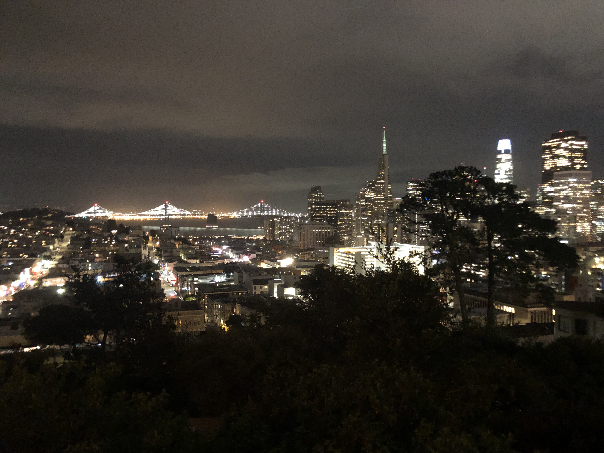
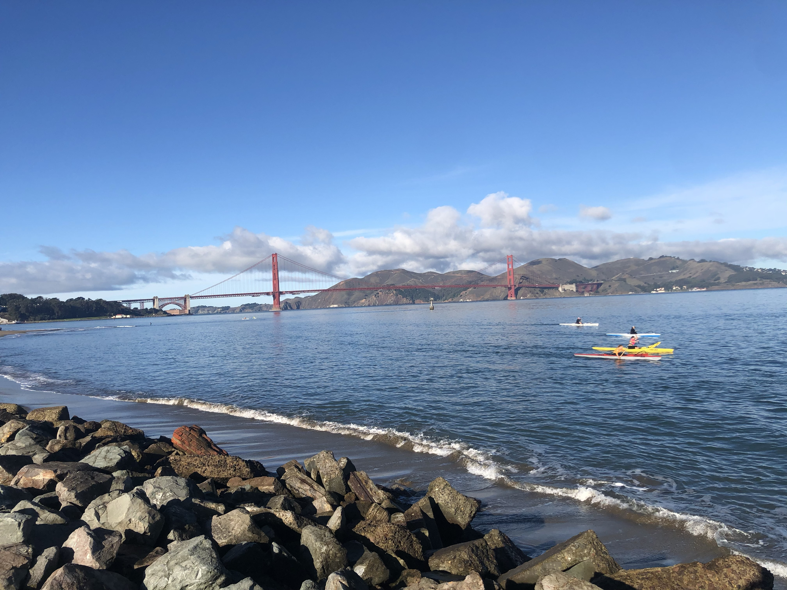

San Fransisco, often called San Fran, is the cultural, commercial and financial center of Northern Califronia. Contrary to popular belief, San Fransisco is not part of Silicon Valley . It is the closest cosmopolitan metropolitan area and thus, by default has become an extension by those who work in the tech industry. San Fransisco is home to some of the largest tech companies in the world. These include:
| Name of Company | Number of Employees |
|---|---|
| Uber | 82,000+ |
| Lyft | 22,000+ |
| Visa | 18,000+ |
| Airbnb | 14,000+ |
| Levi Strauss | 14,000+ |
As of 2020, San Francisco has the highest salaries, disposable income, and median home prices in the world at $1.7 million. In 2018, San Francisco was the seventh-highest-income county in the United States, with a per capita personal income of $130,696. In the same year, San Francisco proper had a GDP of $183.2 billion, and a GDP per capita of $207,371. It became a hub for technological driven economic growth during the internet boom of the 1990s, and still holds an important position in the world city network today.
In the second technological boom driven by social media in the mid 2000s, San Francisco became a location for companies such as Apple, Google, Facebook and Twitter to base their tech offices and for their employees to live. Since then, tech employment has continued to increase. In 2014, San Francisco's tech employment grew nearly 90% between 2010 and 2014, beating out Silicon Valley's 30% growth rate over the same period.
San Fransisco is also well-known for its cable cars which are designated as a National Historic Landmark and are a major tourist attraction. They can be used as a form of public trasport. Cable cars carry riders up steep inclines to the summit of Nob Hill, once the home of the city's business tycoons, and down to the waterfront tourist attractions of Fisherman's Wharf, and Pier 39, where many restaurants feature Dungeness crab from a still-active fishing industry.
The following video is shot by Jonah Witcig, a San Fransico resident:
Jonah was kind enough to share some pictures he took as well: Here are some of them:
 